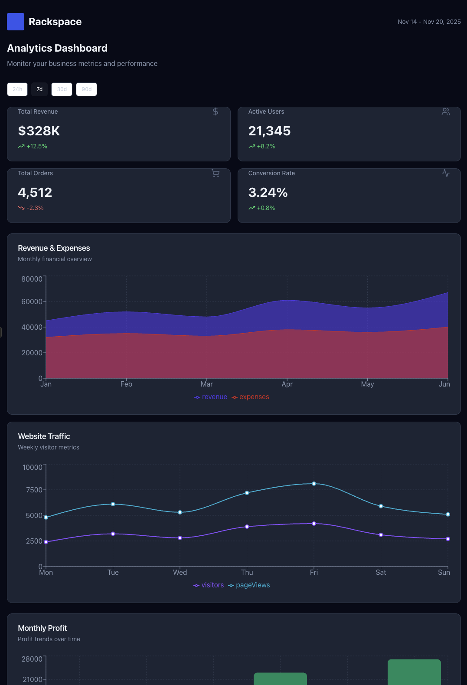

This project operationalizes design principles for AI. We transformed traditional brand guidelines into a set of AI-ready visual rules used across multiple generative systems.
The system translates look, feel, tone, and visual language into structured prompt formats and reference images. It acts as a guardrail to ensure consistency across concept art, marketing visuals, and UI mockups.